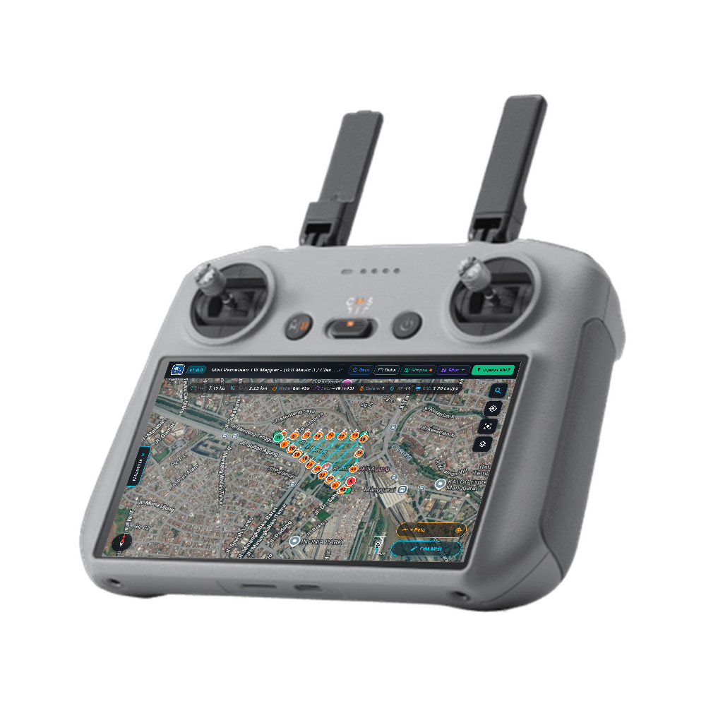
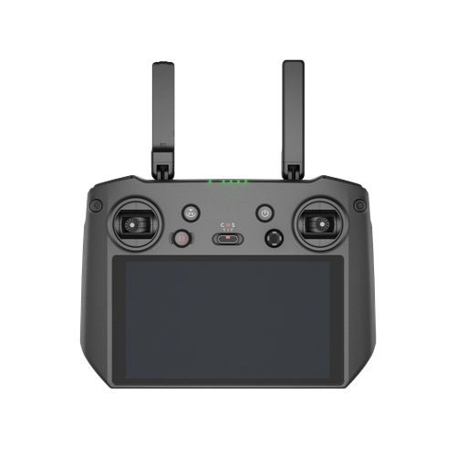
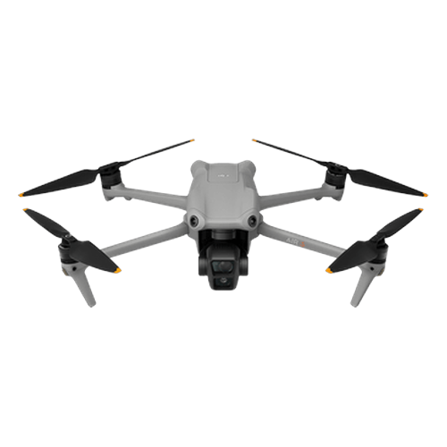
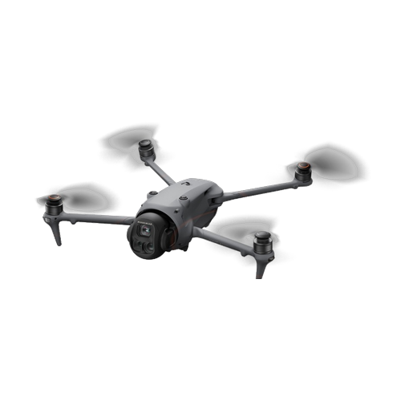
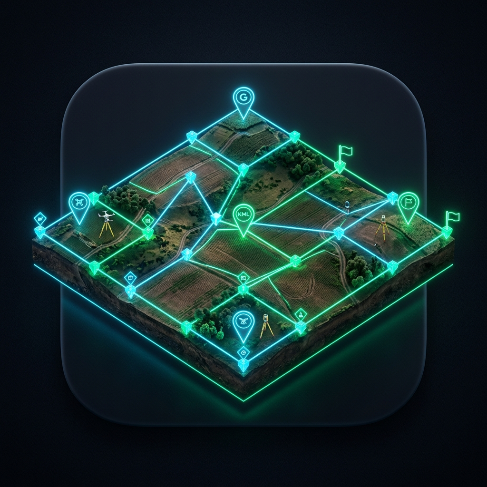
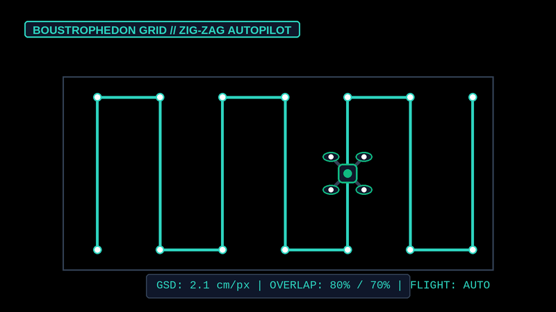
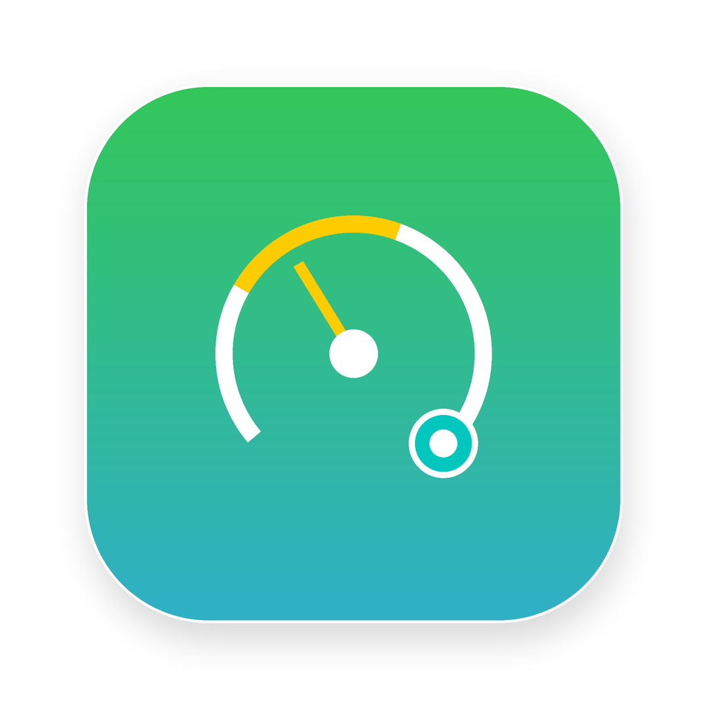

Pemetaan drone otonom, langsung di remote-mu.
Rencanakan jalur terbang, ikuti kontur bukit secara presisi, dan kirim misi ke drone secara instan tanpa perlu repot membawa laptop ke lapangan.

Mulai dalam 3 menit
Dapatkan akses coba gratis, ikuti video panduan instalasi di remote, dan siapkan dokumen teknisnya.
Pasang langsung di remote controller Anda dan rasakan kemudahan membuat misi pemetaan tanpa biaya di awal.
Panduan visual cara instalasi di remote controller dan langkah demi langkah membuat jalur terbang hingga drone lepas landas.
Modul pendukung sistem remote controller untuk mengaktifkan fitur Flash Inject instan (< 1 detik tanpa dummy) serta performa optimal di lapangan.
Modul pendukung sistem remote controller untuk mengaktifkan fitur Flash Inject instan (< 1 detik tanpa dummy) serta performa optimal di lapangan.
Petunjuk lengkap pengoperasian fitur, persiapan file KML, konfigurasi peta offline, dan panduan keselamatan terbang.
Kenapa TW-Mapper
Dirancang untuk mengatasi kerumitan membawa laptop, panas terik di lapangan, dan kendala sinyal putus di area terpencil.
-
100% Mandiri Tanpa LaptopCukup bawa remote controller Anda ke lokasi survei. Rencanakan batas area, atur overlap foto, dan atur ketinggian langsung di layar genggam tanpa repot membuka laptop di bawah terik matahari.
-
Kirim Misi Instan (< 1 Detik)Fitur Flash Inject menyalurkan rute waypoint yang sudah dihitung langsung ke direktori resmi remote dalam sekejap mata melalui modul pendukung TW Tweaks / WanDrone Tweaks / Fly Mod. Tanpa kabel transfer data, tanpa perlu berkas dummy.
-
Sinyal Putus Misi Tetap BerjalanMisi dieksekusi secara otonom oleh otak autopilot firmware drone. Bila sinyal radio terhalang bukit atau pohon, drone tetap menyelesaikan pemotretan mandiri lalu pulang ke titik lepas landas (RTH) dengan selamat.
Cocok dengan perangkatmu
Gunakan remote controller berlayar terintegrasi maupun smartphone Android dengan remote standar seri RC-N.
Remote Controller yang Didukung




Model Drone yang Didukung






Fitur Unggulan
Fitur pemetaan cerdas untuk hasil survei presisi, cepat, dan hemat baterai.

KML Multi-Boundaries
Muat file KML banyak batas lahan atau sertifikat tanah sekaligus dalam satu proyek.

Grid & Zig-zag Otomatis
Kalkulasi otomatis sudut jalur optimal, overlap, dan resolusi tanah (GSD) untuk ortofoto tajam.

Speed Clamping Aman
Mencegah drone terbang terlalu cepat saat memotret sehingga foto bebas blur.

Asymmetrical Corridor
Ideal untuk pemetaan koridor jalan raya, jalur transmisi, atau sungai dengan batas asimetris.


Pilihan lisensi
Pilihan paket lisensi resmi untuk remote controller Anda dengan dukungan teknis penuh dan pembaruan berkala.
Siap Meningkatkan Operasional Pemetaan Anda?
Buka potensi penuh remote controller Anda dengan TW-Mapper. Dapatkan rincian paket lisensi, tabel perbandingan fitur, panduan 3 langkah aktivasi perangkat, serta akses portal akun lisensi resmi kami.
Pertanyaan umum
Jawaban ringkas seputar operasional TW-Mapper di lapangan, lisensi perangkat, dukungan drone & remote, serta berkas misi.
Terhubung dengan WanDrone
Ikuti media sosial resmi kami untuk tutorial terbaru, tips praktis pemetaan lapangan, dan konsultasi langsung.
Update dokumentasi proyek, tips survei drone, dan foto kegiatan pemetaan.
@wan.drone.plg
Komunitas dan pengembangan aplikasi TW Streamer & TW-Mapper.
@throttle_warriors
Video pendek tutorial lapangan, ulasan fitur, dan demonstrasi praktis.
@wan.drone
Tutorial lengkap panduan instalasi, pemetaan 3D, dan rekaman webinar teknis.
@wandroneapp
Layanan aktivasi perangkat remote controller dan administrasi akun lisensi resmi.
Untuk informasi produk, fitur aplikasi, panduan penggunaan, dan konsultasi teknis di lapangan:
Siap begitu remote-mu siap.
Coba gratis sekarang dan diskusikan pertanyaan teknis Anda langsung bersama tim & komunitas pilot di Forum Tanya Jawab.
Unduh Coba Gratis Buka Forum Tanya Jawab